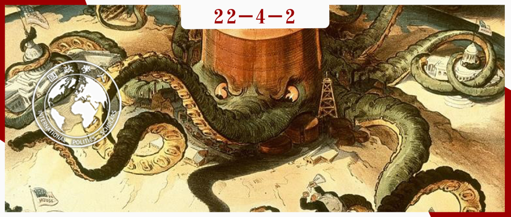
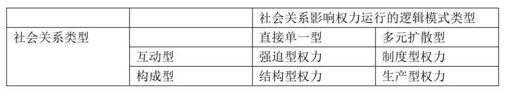

收录于合集

**
**
“权力”概念是现实主义者独享的吗？
作者： Michael N. Barnett，乔治华盛顿大学艾略特国际关系学院教授，著名建构主义学者，主要研究领域为国际关系理论、国际组织和中东政治；Raymond Duvall，明尼苏达大学教授，研究领域为国际关系理论和全球治理。
编译： 郑敖天（国政学人编译员，佩波代因大学公共政策学院）
来源： Barnett, M., & Duvall, R. (2005). Power in International Politics. International Organization , 59(1), 39-75. doi:10.1017/S0020818305050010

导读
在本文中，作者通过对国际关系中“权力”概念的再审视，批判了学界将“权力”当成现实主义学派垄断的政治概念的趋势。作者本文的目标，是为权力概念建立起一套独立完善的分类学体系，并以此凸显在国际关系中，权力运行过程的复杂性和多元性。这种带有明显建构主义色彩的尝试，凸显了作者希望打破国际关系中不同学派间的屏障，建立起一个更加开放统一的国际关系知识体系的目标。这种研究方法和目标，值得国内国际关系学者学习。
与此同时，作者在文章后半部分，对“美利坚帝国”在全球治理中对不同类型权力的具体应用进行了剖析。这一剖析指出了美国在国际关系实践中对不同类型的权力的交叉运用，是其维持自己在当前全球化中处于主导地位的核心原因。
摘要
“权力”是国际关系中的核心概念之一。然而在国际关系研究中，现实主义者长期主导了对权力概念的定义与解释权。作者认为，现实主义语境下的权力只是国际关系中权力的一种表现形式。但在现实的国际关系中，权力并不总是在零和游戏的框架下运作。 本文认为，权力的运行模式主要由两个要素决定：1.权力所处的社会关系。2.权力所产生的结果。在此基础上，作者将权力分成了四种类型：强迫型、制度型、结构型和生产型。 在这种情况下，作者认为学界不应对国际关系中的权力进行一元化的认知，而是应基于具体的历史和社会背景对其进行理解。
编译
01
引言
自911事件以来，美国发动的反恐战争使国际关系学界开始重新审视“权力”这一概念。现实主义者将权力定义为“国家使用物质资源让他人去做其原本不会做的事情”。而美国发动的阿富汗和伊拉克战争似乎也证明了这一观点。此后，许多有关权力运作的研究都集中在国家实力和权力使用后果脱节的“权力悖论”上。与此同时，自由主义者也开始逐渐接受现实主义对权力的定义，并将注意力集中在对权力的“驯服”上。
这种对权力概念的一元化解释的流行，是源于国际关系学界对国家行为体在权力行使上的多元化缺少理解。在权力运行过程中，国家的物质能力并不是唯一的决定因素。持久性的国际体系与社会结构也对权力运行具有至关重要的影响。 作者认为对权力的理解不应仅停留在其结果上，更要研究权力的生产过程。
02
权力的生产与类型
作者认为，权力生产过程中有两个重要因素。首先，权力所处的社会关系决定了牵涉其中的行为体之间的互动与选择。同时，权力在运行过后产生的结果也决定了权力的性质。在这种情况下，作者将国际关系中的权力分为了四种类型：
1.强迫型权力（Compulsory power），该种权力符合现实主义对权力的一般定义，即“国家使用物质资源让他人去做其原本不会做的事情”。
**
**
2.制度型权力（Institutional power），此权力下的国家行为体会依据某种带有普遍性的制度准则行使权力。
**
**
3.结构型权力（Structural power），国家行为体会在将自身能力与其它行为体进行对比后，决定如何行使权力。
**
**
4.生产型权力（Productive power），基于行为体的主观制造的意义和表达而产生。
**
**
作者强调，这四种权力并不是相互排斥的，而是在权力运行过程中经常相互融合。在这种情况下，作者提出的权力分类结构有助于学者对权力的多元化和复杂性进行研究。同时他也认为，这一结构并不局限于某一国际关系学派，因此使其在国际关系研究中具有更好的通用性。作者随后对这一结构进行了详细的诠释。
03
权力如何通过社会关系表达？
作者认为，由于权力的国家行为体是事先基于某种社会关系建立的，所以权力本身也需要依靠社会关系来进行表达。在权力运行中，占主导的社会关系有两种：第一种是互动型的社会关系，基于行为体间的直接互动。具体例子为压制型权力（Power over）,即权力以一方对另一方的控制能力的形式存在。第二种是构成型的社会关系，基于行为体内部各种因素的内化。具体例子为赋予型权力（Power to），即权力以一方内部的自我规范的形式而存在。
与此同时，作者认为社会关系对权力运行的影响逻辑，既可以是直接单一的（如马克思主义下的劳动力和资本的关系），也可以是多元且带有扩散性的（如两国国民间的宗教、政治、文化联系）。在此基础上，本文进一步对前文提出的四种权力进行了分类：

作者随后对四种权力类型进行了进一步的诠释。 作者表示，现实主义者将强迫型权力基于国家行为体使用权力的“意愿”的观点是有瑕疵的。在很多情况下，即使权力的施加者本身没有施加权力的意愿，强迫型权力依然会依托已有的社会关系造成后果，其最明显的例子即是战争中的“附加伤害”。 作者同时认为，强迫型权力不一定借助物质资源的形式实现，也有能以符号式的（如宗教符号）、叙述式的（文化影响）的形式实现。
在讨论制度型权力时，作者强调了制度型权力的“距离性”。在制度型权力的运行过程中，国家行为体的权力不是完全源于自身的资源，而是借助制度平台实现。 尽管制度平台创建的目的往往是为了实现国家行为体的共赢，但是考虑到不同国家行为体在制度体系中的地位，制度型权力运行中依然会不可避免地产生“胜者”与“败者”。
一些学者习惯认为制度型权力和结构型权力是一对互通的概念。作者眼里，结构型权力与制度型权力最大的不同点在于：制度型权力是基于制度结构内的具体限制运行，而结构型权力则是基于国家行为体对自身利益和能力的分析。前者是相对静态的，后者则是完全动态的。在这种情况下，结构型权力的基础不是实现不同国家行为体的共赢，而是给予国家行为体在资源和势力上的不同，对国际关系中的利益和特权进行再分配。在这种情况下，结构型权力不仅会决定国家行为体具体的政治选择，也会影响其意识形态。
最后，生产型权力的特点是：其并非基于某种特定的社会关系，而是在一种更加具有普遍性和扩散型的社会演变过程中运行。与上面提到的三种权力类型相比，生产型权力的实现方式最多，也更加难以被觉察。在历史中，其往往借助某些具有普遍性的社会问题在国家行为体中以知识、传统、叙述、与身份认同的模式运行。诸如“西方社会”、“文明社会”、“流氓国家”这样的叙述，也可以被看做是生产型权力的一种表达形式。
在完成了对四种权力的诠释后，作者以美国的历史为基础，讨论了这四种权力类型的具体历史实践。
04
权力的运行：以“美利坚帝国”为例
作为人类现代史上出现的最强大的全球帝国，美国深刻的参与了二战之后的全球治理。在实践中，美国利用自身在各类国际组织中的优势，甚至是特权地位，实现了自己对其它国家的安全、经济甚至知识结构的影响和塑造。冷战结束后，美国对制度型权力的广泛使用，也成为了许多国家批评国际货币基金组织、世界贸易组织等美国主导下的国际组织的原因。
作者同时认为，制度型权力只是美国全球权力运行的一部分，其基础依然是美国的强迫型权力。作为冷战后世界上唯一的超级大国，美国具有集中大量资源对他国进行影响的能力。 例如美国主导的世界银行可以依托美国的经济实力，将接受美国制定的“发展政策”作为发展中国家获得贷款的政治和经济条件。这也凸显了国际关系实践中不同类型权力间的相互融合。
与此同时，作者也强调，两次世界大战的历史经验也让美国意识到完全建立在强迫之上的全球霸权是完全不可持续的。在这种情况下，美国也广泛使用了生产型权力来将追求美国国家利益与扩散美式价值观进行了整合，并借助文化产品、非政府组织和国际组织等工具来为美国全球霸权制造合法性。
最后，作者提出，美国的结构型权力是源于美国在全球资本主义系统中的优势地位。作为一个资本主义国家，美国不但对全球资本的流动具有权威性的影响，也有使用其军事力量维持目前的全球经济体系的决心和意志。同时，美国也试图借助国际组织在世界范围内建立某种程度上的互助机制。 其多年来对欠发达国家的援助，除了扩散本国影响力的目的外，也有通过有限分配全球资本主义系统内部资源的方式，来获得其它国家对美国主导下的世界体系的支持的目标。
词汇整理
本质上的 Inhere
分类学 Taxonomy
偶发地 Contingently
审校 | 戎秦婴 李博轩
排版 | 朱诗卉 廉梦瑶
文章观点不代表本平台观点，本平台评译分享的文章均出于专业学习之用, 不以任何盈利为目的，内容主要呈现对原文的介绍，原文内容请通过各高校购买的数据库自行下载。

国政学人
支持学术公益与知识传播
微信扫一扫赞赏作者 __赞赏
已喜欢，对作者说句悄悄话
取消 __
发送给作者
发送
最多40字，当前共字
上一页 1/3 下一页
长按二维码向我转账
支持学术公益与知识传播
受苹果公司新规定影响，微信 iOS 版的赞赏功能被关闭，可通过二维码转账支持公众号。